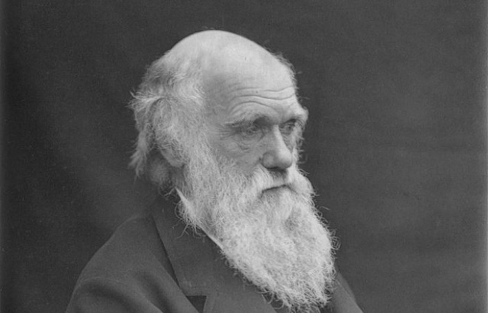
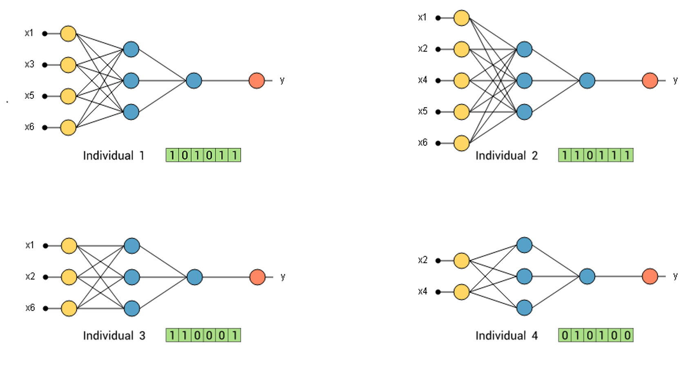

Genetic Algorithms
Tim de Klijn
18-01-2019
https://github.com/timdeklijn/genetic_algorithmsCharles Darwin
- Survey Voyage on the Beagle
- Origin of species
- Natural Selection
Observation

Seed or insect eating finches (vink in Dutch) have different beaks
"Variation is a feature of natural populations and every population produces more progeny than its environment can manage. The consequences of this overproduction is that those individuals with the best genetic fitness for the environment will produce offspring that can more successfully compete in that environment. Thus the subsequent generation will have a higher representation of these offspring and the population will have evolved."Charles Darwin
Dr. John Holland, 1960s
"problem-solving method that uses genetics as its model of problem solving."
Four features:
One
Evolution is a process that operates on chromosomes rather than on the living beings they encode.
Four features:
Two
Natural selection is the link between chromosomes and the performance of their decoded structures. Processes of natural selection cause those chromosomes that encode successful structures to reproduce more often then those that do not.
Four features:
Three
The process of reproduction is the point at which evolution takes place. Mutation may cause the chromosomes of biological children to be different from those of their biological parents, and recombination processes may create quite different chromosomes in the children by combining material from the chromosome of two parents.
Four features:
Four
Biological evolution has no memory. Whatever it knows about producing individuals that will function well in their environment is contained in the gene pool - the set of chromosomes carried by the current individuals - and in the structure of the chromosome decoders.
Step by Step
 https://www.neuraldesigner.com/blog/genetic_algorithms_for_feature_selection
https://www.neuraldesigner.com/blog/genetic_algorithms_for_feature_selection
Initialization
population_size = 200
mutation_rate = 0.03
genes = "abcde....ABC...!,?"
target = "to be, or not to be"
Initizalization + Fitnes Assignment
population = Population(GENES,
POPULATION_SIZE,
TARGET,
TARGET_LENGTH,
MUTATION_RATE)
population.init_population()
population.calc_fitness()
max_fitness = population.max_fitness
Selection + Reproduction
while breed:
population.create_offspring()
population.calc_fitness()
- Crossover + Mutation
- Randomly get DNA from a parent
- Mutate to random gene
Stopping criteria
# Escape loop
if max_fitness == 1.0:
breed = False
Returns
A (DNA) sequence that best fits the targets or has the highest fitness score.
Examples
Optimizing Neural Networks
 https://www.neuraldesigner.com/blog/genetic_algorithms_for_feature_selectionUber - Deep neuroevolution
https://eng.uber.com/deep-neuroevolution/Advantages
- (can) Skip local minima
- A lot of parameters simultaniously